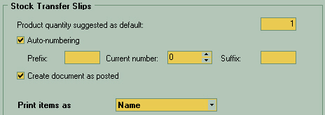

At top of the window there is a field with default quantity, suggested by the system. You may change this number if necessary.
Check "Auto-numbering" in case you wish to use auto numbering for your stock transfer documents.
For better traceability of stock transfer slips and to help users quickly identify this kind of documents, you may specify a prefix and/or suffix for such documents. You may enter them into "prefix" or "suffix" fields. For example, you may enter "ST" for "stock transfers". Current ID number of the document is entered in the "Current number" field. Next document will be assigned a sequence number starting from the current number
Check "create document as posted" if you wish to automatically post the stock transfer slips after they are created. In this case you won't need to use a posting option after you create this document.
Print item as specify what do you want to see in place of name of product or service in reports or printed forms.
For the warehouse staff it may be better to be model number as they often being more specific to describe the needed position in the list, but client may want just a simpler names.
|